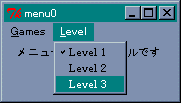
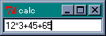
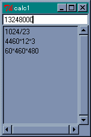
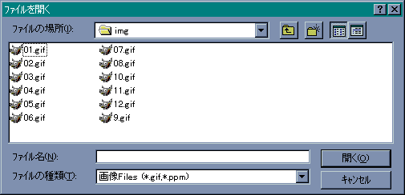

次は GUI には欠かせないメニューの作り方を説明します。Tcl/Tk ではメニューのためのコマンドがたくさん用意されていて、いろいろなメニューを構成することができますが、入門編は Windows でも標準になっている「メニューバー」という方法を説明します。
メニューを作るにはコマンド menu を使います。
menu ウィジェット名 オプション
メニューバーの場合はオプション -type で menubar を指定します。作成したメニューバーはウィンドウを作成するコマンド toplevel のオプション -menu で設定します。メインウィジェット「 . 」 の場合は configure を使って変更します。
menu .m -type menubar . configure -menu .m
これでウィンドウにメニューバーが設定されました。あとはこのメニューバーに具体的なメニューを追加します。これにはウィジェットコマンド add を使います。
.m add 項目 オプション
第 2 引数の項目には、具体的なメニューを指定します。
cascade を指定すると、そのメニューを選択したときに複数のメニューを表示します。checkbutton は yes / no のような二者択一の情報を設定するために使います。command はメニューが選択されたときに、オプション -command で指定したコマンドを実行します。radiobutton は複数の値からひとつを選ぶ場合に使います。separator は区切りを表示するだけです。
checkbutton と radiobutton はメニューバーに直接定義するのではなく、cascade と組み合わせて使うことが一般的です。checkbutton と radiobutton を使う場合、選択する値をオプション -value で指定し、その値を格納する変数をオプション -variable で指定します。また、-command オプションを設定することもできます。この場合、変数に値がセットされるとともに、指定したコマンドが実行されます。
たとえば、将棋やリバーシのようなゲームのメニューを考えてみましょう。最低限必要となるメニューは、ゲームの開始、先手と後手の選択、コンピュータの強さの設定、などでしょうか。最初の 2 つはメニュー Games で設定し、強さはメニュー Level で選択することにします。この場合、まず Games と Level をメニューバーに追加します。
.m add cascade -label "Games" -underline 0 -menu .m.m1 .m add cascade -label "Level" -underline 0 -menu .m.m2
オプション -underline は、ラベルの文字に下線を付け加えます。Windows の場合、Alt キーでメニューを選択できますが、この状態で下線のついた文字をキーボードから入力することで、そのメニューを選ぶことができます。
cascade を使う場合、表示するメニューをオプション -menu で設定します。このメニューはメニューバー .m の中に設定するので、ウィジェット名は .m.m1 のようになります。それではメニュー Games を設定します (リスト 7)。
リスト 7 : Games メニューを作る menu .m.m1 -tearoff no .m.m1 add command -label "Start" -underline 0 -command "start" .m.m1 add separator .m.m1 add radiobutton -label "先手" -variable action -value 0 .m.m1 add radiobutton -label "後手" -variable action -value 1 .m.m1 add separator .m.m1 add command -label "Exit" -underline 0 -command "exit"
menu のオプション -tearoff は、そのメニューをウィンドウから引きちぎることができるかを設定します。デフォルトでは yes になっています。その場合、メニューを選択するといちばん上に破線が表示され、そこをクリックするとそのメニューが独立したウィンドウになります。
Start を選ぶとゲームを開始します。ゲームを開始するコマンド、これはゲームによって異なりますが、この例では start を実行します。
先手・後手の選択はラジオボタンを使っています。これで、先手、後手のどちらかを選ぶことができます。たとえば、後手をクリックすると、action の値は 1 にセットされ、ラベルの左側にレ点がつきます。使用する変数は、あらかじめ初期化しておきましょう。
これで Games をクリックすると、Start、先手・後手、Exit という 3 つのメニューが現れます。
次はメニュー Level の設定です (リスト 8)。
リスト 8 : Level メニューの作成 menu .m.m2 -tearoff no .m.m2 add radiobutton -label "Level 1" -variable level -value 1 .m.m2 add radiobutton -label "Level 2" -variable level -value 2 .m.m2 add radiobutton -label "Level 3" -variable level -value 3
ラジオボタンを使えば 3 つの中からひとつを選ぶことができます。ゲームの中身は空ですが、このように簡単にメニューを設定することができます。
 メニューも数行で作成できるチェックボタンとラジオボタンは、メニューだけではなくウィジェットとして生成することができます。コマンドは checkbutton と radiobutton で、使うオプションはメニューの場合と同じです。Widget Tour にデモプログラムがありますので、参考にしてください。
いままでの例題は、マウスで操作するものばかりでした。今度はキーボードからの入力を受け付けるウィジェットを説明します。
エントリー (entry) は 1 行の文字列を入力、または編集することができます。例題として、数式を入力して計算する calc.tcl を作ります。これはとても簡単に作ることができます。まずエントリーから説明しましょう。
entry ウィジェット名 オプション
entry でよく使うオプションは -textvariable です。entry で入力されたデータは指定した大域変数に格納されます。また、大域変数の値が変更されると、entry の内容も変更されます。面白いオプションが -show です。これはパスワードのように画面に見えてはいけない文字列を打ち込むときに使います。たとえば、-show "*" とすれば、入力された文字は * として表示されます。
ウィジェットコマンドには cget, configure のほかに、文字列の取得、挿入、削除、カーソルの移動、カット & ペースト、スクロールなど、たくさん用意されていますが、文字列の入力だけならば、それらを使う機会はあまりないでしょう。また、エントリーのキー操作は Emacs に準じているので、Emacs / Mule を使っているユーザーには扱いやすいと思います。
それではプログラムを作りましょう。データの入力が完了したらボタンを押してもらってもいいのですが、データはキーボードから入力するのですから、マウスよりもキーボードで操作したほうがいいでしょう。リターンキーの入力でデータを計算するようにします。キー入力もイベントのひとつですからバインディングを設定することができます。プログラムは次のようになります。
entry .e0 -textvariable buffer
pack .e0
bind .e0 <Return> {
set buffer [expr $buffer]
}
計算は expr を使えばいいので簡単ですね。といっても、Tcl の数学関数が使えるので、sin, cos, tan など関数電卓としても使うことができます。
 数式を入力するこのプログラムのポイントは bind コマンドです。
bind ウィジェット名 イベント [+]コマンド
すでにバインドされているコマンドがある場合、新しいコマンドに差し替えられます。コマンドの前に + をつけると、既存のコマンドに新しいコマンドが追加されます。コマンドを省略すると、そのイベントにバインドされているコマンドが返されます。ウィジェット名だけを指定すると、そのウィジェットにバインドされているイベントが返されます。
イベントの指定は次のような構文を持っています。
<modifier-modifier-type-detail>
type は GUI 環境上で発生するイベントタイプを表します。ユーザーが操作するときに発生する主なイベントタイプには次のようなものがあります。
| 名前 | イベント |
|---|---|
| Key, KeyPress | キーが押された |
| KeyRelease | キーが離された |
| Button, ButtonPress | マウスのボタンが押された |
| ButtonRelease | マウスのボタンが離された |
| Motion | マウスの移動 |
| Enter | マウスカーソルがウィンドウの中に入った |
| Leave | マウスカーソルがウィンドウから出た |
このほかにも、ウィンドウが破棄された時に発生するイベントなど、さまざまなイベントタイプがあります。
マウスとキーのイベントには、ボタンやキーの種類を detail で指定します。マウスでは左ボタンが 1 となります。キーの種類は名前 (Keysym) で指定します。英数字はその文字がそのまま名前となります。このほかに、改行キーに対する Return、バックスペースキーに対する BackSpace などがあります。
detail を指定する場合は type を省略することができます。ただし、<1> という指定は <KeyPress-1> ではなく <Button-1> となるので注意してください。また、通常の英数字の場合、< > も省略することができます。つまり、<KeyPress-a> は a と書くことができます。それから、<KeyPress> のように detail を省略すると、種類によらずキーが押された時にバインドされたコマンドが実行されます。
イベントタイプの前にはモディファイア (modifier) をつけることができます。たとえば、<Control-d> はコントロールキーと d を同時に押したときのイベントを表します。主なモディファイアを次に示します。
| 名前 | 機能 |
|---|---|
| Control | Ctrl キーを押しながらの入力 |
| Shift | Shift キーを押しながらの入力 |
| Alt | Alt キーを押しながらの入力 |
| Button1, B1 | マウスの左ボタンを押しながらの入力 |
| Button3, B3 | マウスの右ボタンを押しながらの入力 |
| Double | ダブルクリック |
| Triple | トリプルクリック |
Tcl/Tk の出身地である X Window では 3 ボタンマウスを使うので、Button2 は右ボタンではなく中ボタンとなります。たとえば、左ボタンのダブルクリックに対応するイベントは <Double-1> となります。また、イベントタイプは複数個指定することができます。たとえば、<Escape>a はEsc キーが押されたあとでキー a を押したイベントに対応します。
バインドされたコマンド内では、イベント情報を取得するための方法が用意されています。% から始まる文字列はイベント情報に置換されます。
| 記号 | イベント情報 |
|---|---|
| %b | マウスボタンの番号 |
| %x, %y | マウスカーソルの座標 |
| %W | ウィンドウのパス名 |
| %A | キーに対応する文字 |
| %K | キーに対応する名前 (Keysym) |
| %% | % 自身を表す |
置換の指定は 30 種類以上ありますので、詳細はヘルプを参照してください。たとえば、次のプログラムを wish のコンソール上から実行すると、キーに対応する名前を表示することができます。
bind . <KeyPress> {puts "Keysym is %K"}
実際に試してみると、F1 や F2 キーには F1, F2 という名前が割り当てられていることがわかります。
次は、リストボックスとスクロールバーというウィジェットを説明します。リストボックスは複数の文字列を表示し、ユーザーはその中からひとつ以上の文字列を選ぶことができます。スクロールバーは、ほかのウィジェットの表示範囲を制御します。例題として、calc.tcl で入力した計算式をリストボックスに格納しておいて、必要なときに取り出せるように改造してみましょう。最初にリストボックスから説明します。
listbox ウィジェット名 オプション
listbox で指定する主なオプションは、表示範囲のコントロールと選択方法です。
| オプション | 機能 |
|---|---|
| -xscrollcommand | x 方向のスクロールコマンドを指定 |
| -yscrollcommand | y 方向のスクロールコマンドを指定 |
| -selectmode | セレクションモード |
スクロールコマンドは、リストボックスの表示範囲が変更されたときに呼び出されるコマンドです。たとえば、スクロールバーと連動させる場合、このコマンドはスクロールバーの位置を動かすウィジェットコマンド set が指定されます。これはコマンド scrollbar と一緒に説明します。セレクションには次のモードが用意されています。
-selectmode のデフォルト値は browse です。データの挿入、削除、取得はウィジェットコマンドで行います。
| コマンド | 機能 |
|---|---|
| insert 位置 文字列 ... | 指定した位置の直前に文字列を挿入 |
| delete first last | 指定した範囲の行を削除する |
| get first last | 指定した範囲の行をひとつの文字列として返す |
| index 位置 | 指定した位置の行番号を返す |
| curselection | 選択された行番号をリストにして返す |
| see 位置 | 指定した位置が見えるようにスクロールする |
このほかにもいろいろなコマンドがありますが、特にスクロールバーに関係する xview / yview コマンドが重要です。これは、scroll コマンドのところで説明します。
位置の指定には次の方法があります。
セレクションモードが extended のときにドラッグで選択した場合、最初の行が anchor で最後の行が active となります。したがって、delete に anchor と active を指定すると、選択した行をリストボックスから削除することになります。
次はスクロールバーを説明します。スクロールバーは、その両端に矢印がつき、中央付近には四角いスライダが表示されます。矢印を左クリックするか、スライダをドラッグすることで表示位置を変更します。また、矢印とスライダの隙間をクリックすると 1 画面分スクロールします。スクロールバーを作るコマンドは scrollbar です。
scrollbar ウィジェット名 オプション
scrollbar で主に使用されるオプションには次のものがあります。
| オプション | 機能 |
|---|---|
| -orient | スクロールバーの方向 |
| -troughcolor | 矢印とスクロールの隙間の色 |
| -command | スクロールバーが動いたときに実行するコマンド |
-orient はスケールと同じくスクロールバーの方向を指定するもので、horizontal または h を指定すると水平になり、vertical または v で垂直になります。-command はスクロールバーを動かしたときに実行するコマンドを指定します。リストボックスとスクロールバーを連動させる場合、このコマンドはリストボックスの表示位置を制御するコマンド xview や yview が指定されます。
スクロールバーで重要なウィジェットコマンドは set です。
set first last スライダの位置を指定する
set の引数 first と last は 0 から 1 の間の実数で、表示されている範囲を表しています。たとえばリストボックスと連動している場合、全体の行数が 100 行で 20 行目から 30 行分表示されているとすると、set 0.2 0.5 となります。つまり、データ全体の 20 % の位置から 50 % の位置まで表示されていることを表します。スクロールバーではこのデータからスライダの位置と大きさを調整します。
set はリストボックスのオプション -xscrollcommand や -yscrollcommand で指定します。スクロールバーのウィジェット名を .s とすると、指定方法は次のようになります。
-xscrollcommand ".s set"
リストボックスで表示範囲が変更されるとスクロールコマンドが実行されますが、このとき、リストボックスの表示範囲が引数として付け加えられ、コマンドが実行されます。
set はリストボックスの変更をスクロールバーに反映させるために使いましたが、スクロールバーの変更をリストボックスに反映させるためのオプションが -command です。ここにリストボックスのウィジェットコマンド xview や yview を指定します。指定方法は簡単で、リストボックスのウィジェット名を .lb とすると次のようになります。
listbox .lb -yscrollcommand ".s set" scrollbar -orient v -command ".lb yview"
スクロールバーの操作によって、次に示す文字列が付け加えられてコマンドが実行されます。
まあ、付け加えられるデータを無理に覚える必要はありません。スクロールバーを使うときは、連動するウィジェットのスクロールオプションに set を指定して、スクロールバーの -command に表示を制御するウィジェットコマンドを指定する、と理解しておけば十分でしょう。
それでは、calc.tcl を改造しましょう。まず必要なウィジェットを生成します (リスト 9)。
リスト 9 : ウィジェットの追加 entry .e0 -textvariable buffer listbox .lb -yscrollcommand ".s1 set" -xscrollcommand ".s2 set" scrollbar .s1 -orient vertical -command ".lb yview" scrollbar .s2 -orient horizontal -command ".lb xview" grid .e0 -row 0 -column 0 -columnspan 2 -sticky ew grid .lb -row 1 -column 0 -sticky nsew grid .s1 -row 1 -column 1 -sticky ns grid .s2 -row 2 -column 0 -sticky ew
リストボックスとスクロールバーは grid で配置します。grid は格子状にウィジェットを配置するジオメトリマネージャです。ウィンドウを M 行 N 列のセルに分割し、そこにウィジェットを配置するのです。x 方向の位置はオプション -column で指定し、y 方向の位置は -row で指定します。grid には pack とは違うオプション -columnspan と -rowspan があります。これは、複数のセルにまたがってウィジェットを配置するために使います。-columnspan は x 方向にまたがるセルの数、-rowspan は y 方向にまたがるセルの数を指定します。それから、pack ではオプション -fill でウィジェットを引き伸ばすことができましたが、grid ではオプション -sticky を使います。
| { } | 上下左右とも中央寄せ |
| n | 上寄せ |
| s | 下寄せ |
| e | 右寄せ |
| w | 左寄せ |
| ns | 上下方向に引き伸ばす |
| ew | 左右方向に引き伸ばす |
-sticky は pack のオプション -anchor と同じ機能もあわせ持っています。
エントリーはいちばん上に配置しますが、-columnspan で x 方向にセルをつなげて、-sticky ew で左右に広げています。
次はバインディングを設定します。リストボックスからデータを選ぶ処理ですが、ダブルクリックしてもらうことにします (リスト 10)。
リスト 10 : データの選択
bind .e0 <Return> {
.lb insert end $buffer
.lb see end
set buffer [expr $buffer]
}
bind .lb <Double-1> {
set buffer [.lb get active]
}
エントリーではリターンキーが入力されたら、データをリストボックスに代入し、expr の計算結果を buffer にセットします。これが逆になると、答えをリストボックスに代入することになります。それから、ウィジェットコマンド see を使って、セットした計算式が見えるようにスクロールしています。
リストボックスでは、ダブルクリックされた位置から get でデータを取り出して buffer にセットします。ダブルクリックですから位置は active と anchor どちらでもかまいません。
 式の履歴が残るように改造した電卓今度は画像の取り扱いについて説明しましょう。以前の Tk では、白黒のビットマップしか扱えませんでしたが、ver 4.0 以降の Tk では標準でカラーイメージをサポートし、GIF や PPM / PGM 形式の画像ファイルを扱うことができるようになりました。PPM はカラー、PGM はグレイスケールの画像を扱う、UNIX で標準的に用いられるベタフォーマットです。
Tk では、コマンド image でイメージを作り出し、そのイメージをラベルやボタンなどのウィジェットに使うことができます。たとえば、画像ファイルからイメージを作るには、次のように行います。
image create photo 名前 -file ファイル名
create はイメージの生成、photo はイメージの種別でカラーを意味します。名前は生成したイメージを表します。省略した場合は適当な名前がつけられ、その名前が image の返り値となります。image は create 以外にも次の操作を行うことができます。
| コマンド | 機能 |
|---|---|
| image delete 名前 | イメージを削除する |
| image types | 指定可能な種別のリストを返す |
| image names | 全イメージの名前をリストにして返す |
| image type 名前 | イメージの種別を返す |
| image height 名前 | イメージの高さを返す |
| image weight 名前 | イメージの幅を返す |
ラベルやボタンにイメージを表示するには -image オプションを使います。
label .l0 -image 名前
これでラベルにイメージが表示されます。それでは簡単な例題として、GIF / PPM の画像を表示するプログラムを作ります。このようなアプリケーションの場合、ファイルの指定方法が GUI らしくないとボロクソにいわれるものですが、幸いなことに Tk にはファイルを選択するためのコマンドが用意されています。
tk_getOpenFile 入力ファイルを選択 tk_getSaveFile 出力ファイルを選択
これらのコマンドを実行すると、ファイル選択のウィンドウ (ダイアログ) が開かれ、ウィンドウ上の操作でディレクトリをたどり、ファイルを選ぶことができます。使用できるオプションは次の通りです。
このなかで重要なオプションが -filetypes です。アプリケーションで扱うことができるファイル種別を拡張子で指定し、そのファイルだけを表示します。指定はリストで行います。
-filetypes { ファイル種別 ... }
ファイル種別 := {{名前} {拡張子 ... }
たとえば、GIF / PPM ファイルを指定する場合は、次のようになります。
-filetypes {
{{画像Files} {.gif .ppm}}
}
この場合は GIF と PPM ファイルが一緒に表示されます。次のように指定すると、表示するファイルをダイアログの操作で切り替えることができます。
-filetypes {
{{GIF Files} {.gif}}
{{PPM Files} {.ppm}}
{{ALL Files} {*}}
}
すべてのファイルを表示する場合は * を使います。また、空文字列 "" を指定すると、拡張子のないファイルを表示します。ファイルを選択すると、ファイル名をフルパス形式で返します。選択しない (キャンセル) 場合は、空文字列が返されます。
それでは、GIF / PPM 画像ローダーを作りましょう。まず、メニューから設定します (リスト 11)。
リスト 11 : 画像ローダ用メニュー menu .m -type menubar . configure -menu .m .m add cascade -label "File" -under 0 -menu .m.m1 menu .m.m1 -tearoff no .m.m1 add command -label "Open" -under 0 -command "load_file" .m.m1 add separator .m.m1 add command -label "Exit" -under 0 -command "exit"
メニュー File の下に、ファイルを選択する Open とアプリケーションを終了する Exit の 2 つのメニューを設定します。次に、イメージとグローバル変数を定義します (リスト 12)。
リスト 12 : グローバル変数の定義 set path_name "" image create photo image_data -width 64 -height 64 label .l0 -image image_data pack .l0
path_name は選択されたファイルのパスを格納しておきます。tk_getOpenFile にこのパスを指定することで、次にファイルを選ぶときは同じディレクトリから始めることができます。アプリケーションの開始時にはファイルは指定されていないので、空のイメージを作って表示しておきます。あとは、画像ファイルをロードする本体を作ります (リスト 13)。
リスト 13 : ローダ本体
proc load_file {} {
global image_data path_name
set filename [tk_getOpenFile -initialdir $path_name \
-filetypes {{{画像Files} {.gif .ppm}}}]
if {$filename != ""} {
set path_name [file dirname $filename]
image delete image_data
image create photo image_data -file $filename
.l0 configure -image image_data
}
}
tk_getOpenFile でファイル名を取得したら、パスを取り出して path_name にセットします。file はファイル情報を取得する Tcl のコマンドです。file dirname はファイル名からパス部分を返します。tail を指定するとパス部分を取り除いたファイル本体の名前を返します。このほかにも、ファイルの種別や時刻などさまざまな情報を得ることができますが、詳細はヘルプを参照してください。
ファイル名をゲットしたら、それが空文字列でないことを確認します。次に、表示しているイメージを image delete で削除してから、新しいイメージを image create で生成します。最後に、ラベルの configure で表示するイメージを変更します。とても簡単ですね。
 表示する GIF ファイルの選択ところで、イメージを生成するには、ファイルからロードするだけではありません。イメージを直接操作することができます。いろいろなコマンドが用意されていますが、入門編では説明を割愛させていただきます。興味のある方は参考文献やヘルプをあたってみてください。